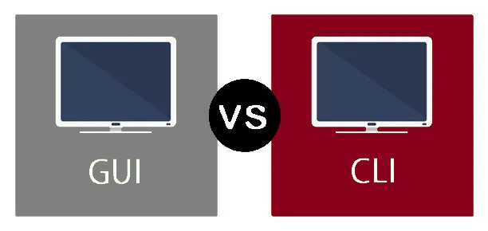
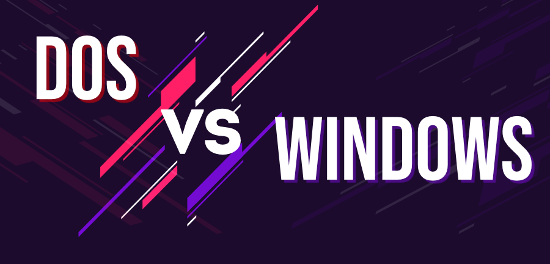

Parancskiadás módja szerint:
Parancsorientált: az operációs rendszerben az utasítások, parancsok kiadása billentyűzet segítségével, szigorúan meghatározott szintaktikájú (formai követelményű) utasítások, illetve a hozzájuk kapcsolódó paraméterek, kapcsolók kiadásával történik.
Grafikus felhasználói felületű: a bemeneti eszközök közül a mutatóeszközre optimalizált beviteli eljárásokat részesíti előnyben. A rendelkezésre álló menük (statikus és helyérzékeny menük) egyes pontjai, illetve ezek kibontása során az almenük segítik a parancs kiadását. A pontos paramétereket párbeszédpaneleken keresztül állíthatjuk be.
Program futtatása szerint:
Egy feladatos: egyszerre csak egy felhasználói szoftver futtatását képes elvégezni. Példaként szintén a DOS operációs rendszert említhetjük.
Több feladatos: egyszerre több programot működtethetünk, nyithatunk meg. Ez azonban nem jelenti azt, hogy ezek valóban szimultán (időben egyszerre) futnak, csupán az operációs rendszer a hardverek megfelelő vezérlésével ennek illúzióját kelti. Valójában az utasítás-végrehajtás sorosan történik, az egyes szoftverek futtatására a processzoridőt - a program prioritásának, teljesítményigényének figyelembevételével - szeletekre bontva, kellő gyakorisággal jutnak hozzá a szoftverek.
Felhasználók száma szerint:
Egy felhasználós: nincsenek külön definiált (meghatározott) felhasználók, s ennek megfelelő jogosultsági feltételek, egyéni beállítások. Minden, a gépet használó személy ugyanabban a felhasználói környezetben végzi a munkáját.
Több felhasználós: a felhasználók külön-külön felhasználói fiókokat (személyiségeket) határozhatnak meg maguknak. Minden egyes felhasználóhoz jogosultságok társíthatók a kiemelt (Rendszergazda vagy Administrator) felhasználó által.
Hálózatkezelés szerint:
Egyedi: csak az adott gépen folytatott feladatvégzést támogatja.
Hálózati: képes a hálózati kapcsolatok kezelésére, az ezen keresztüli adatfolyam vezérlésére, értelmezésére. Ennek segítségével akár távolról is vezérelhető.
Felhasználási cél szerint:
PC operációs rendszer: általános célú személyi számítógép alkalmazói szoftvereinek futtatására szolgál, a személyi számítógép architektúrájához és az általános felhasználói igényekhez igazodik.
Szerver operációs rendszer: egy időben több (sok) felhasználó igényeit, s több (sok) megosztott hardver és szoftver erőforrást kezel.
Speciális célú operációs rendszer: nem általános számítógép, hanem informatikai céleszközök kezelését lehetővé tevő alapszoftver. Ilyenek lehetnek az aktív hálózati eszközök, a mobiltelefonok, multimédiás háztartási eszközök stb.
Forráskód szerint:
Nyílt forráskódú: az operációs rendszer egyes részeinek programszerkezete, programkódjai bárki által megismerhetőek, megváltoztathatóak. Ez lehetőség a fejlesztésre, ám ezáltal egymástól eltérő variánsok jönnek létre.
Zárt forráskódú: a fejlesztő a szerzői jogok fenntartása mellett csupán a használat jogát értékesíti, s a fejlesztéseket (javításokat) is maga végzi el a terméktámogatás részeként.